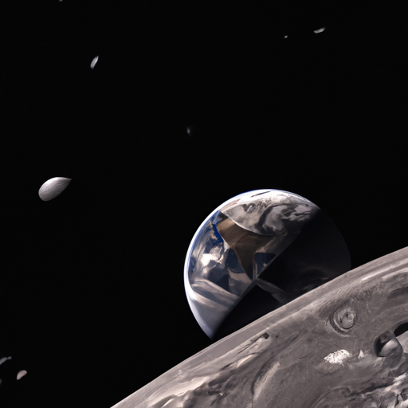

注目記事：「チーズ鉱山」、NASAが極秘調査中
【驚愕】月の裏側で発見された謎の「チーズ鉱山」、NASAが極秘調査中 NASAの内部報告書が匿名の関係者によってリークされ、月の裏側に「チーズ鉱山」が存在すると主張されていることが判明した。
【驚愕】月の裏側で発見された謎の「チーズ鉱山」、NASAが極秘調査中 NASAの内部報告書が匿名の関係者によってリークされ、月の裏側に「チーズ鉱山」が存在すると主張されていることが判明した。
【驚報】日本政府、全国民に「幸福税」導入を検討中！？ 日本政府が新たに「幸福税」と名付けられた税制を導入する計画があるとの情報が流れ、世間を騒然とさせている。
【驚愕】サッカー界に新ルール導入決定、選手は試合中に「ダンスチャレンジ」必須に 国際サッカー連盟（FIFAの略称を変更したFUFU）が、来シーズンから全世界の公式試合で新しいルールを導入すると発表し、サッカー界に衝撃が走っている。